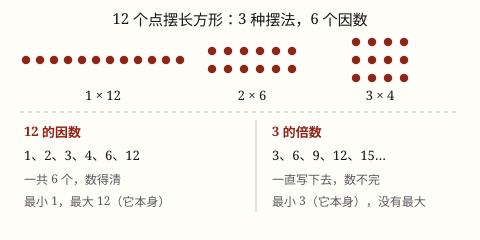

因数和倍数
在非零自然数里，a × b = c 中的 a、b 是 c 的因数，c 是 a、b 的倍数。因数个数有限，倍数个数无限。
| 所属主题 | 因数、倍数、质数、合数 |
|---|---|
| 所属模块 | 数与代数 |
| 课标学段 | 第三学段（5~6年级） |
| 前置知识 | 乘法的初步认识（几个几） |
| 核心素养 | 数感推理意识 |
教材定位
人民教育出版社《2024年版》
对应五下第 1 单元「因数和倍数」：因数与倍数的意义、找一个数的因数与倍数。
课标要求
| 数与代数·数与运算 | 知道 2，3，5 的倍数的特征，了解公倍数和最小公倍数，了解公因数和最大公因数，了解奇数、偶数、质数（或素数）和合数。 印刷第 23 页 行为动词：了解 |
|---|
说明
在乘法算式 3 × 4 = 12 里，3 和 4 都叫做 12 的因数，12 叫做 3 的倍数，也叫做 4 的倍数。
因数和倍数说的都是两个数之间的关系，一定要说清「谁是谁的」——只说「12 是倍数」是没说完的话。
判断的方法很朴素：用 12 分别去除以 1、2、3、4、6、12，商都是整数而且没有余数，这些除数就都是 12 的因数；反过来看，12 能被 3 整除，12 就是 3 的倍数。
我们只在非零自然数（1、2、3、4……）里讨论因数和倍数，0 不参加。一个数的因数数得清：最小的因数是 1，最大的因数是它本身；一个数的倍数数不完：最小的是它本身，再往上还有 2 倍、3 倍、4 倍……看不到头。
使用场景
班级分组：全班 36 人，要分成人数同样多的几个小队，每队几人、分几队？这就是在找 36 的因数。
分装东西：48 瓶果汁装箱，每箱装得一样多、不许剩下，能装几瓶一箱，也是在找 48 的因数。
排队形：运动会走方阵，每行人数一样多，行数和每行人数都是总人数的因数。
判断够不够分：一盒 24 块巧克力，5 个人分，能不能每人一样多？看 24 是不是 5 的倍数就知道。
注意点
话要说完整。「6 是 3 的倍数」对，「6 是倍数」不对。因数和倍数是一对一对说的，离开对方就说不通。
找因数要成对找。找 36 的因数时，1 × 36、2 × 18、3 × 12、4 × 9、6 × 6，一对一对写下来才不会漏。只从 1 往上一个个试，很容易把 4 和 9 漏掉。
别把个数记反。因数是找完就停（个数有限），倍数是永远写不完（个数无限）。
0 不在讨论范围内。因数和倍数研究的是非零自然数，0 既不当作因数，也不当作倍数。
为什么是这样

图 1：一种摆法对应一对因数，摆法试完因数就找完了；倍数却可以一直往后排
算理推导
拿 12 个小圆片，要求摆成一个长方形：不许有空位，也不许叠在一起。能摆出来的只有三种——一行 12 个、2 行每行 6 个、3 行每行 4 个。
每一种摆法对应一句乘法：1 × 12、2 × 6、3 × 4。算式里的两个乘数，就是「横着几个」和「竖着几行」，它们都能把 12 正好分完，所以都叫 12 的因数。
把三种摆法里出现过的数收起来：1、2、3、4、6、12，正好是 12 的全部因数，一共 6 个。想再找一个就找不到了——每一种摆法都试过了，摆法试完，因数就找完。这就是因数个数有限的原因。
倍数刚好相反：3 的倍数是 3、6、9、12、15……每加一个 3 就多一个，永远有下一个，所以倍数个数无限。
再看两头的数：任何数都能被 1 整除，所以 1 是每个数的因数，也是最小的因数；任何数除以自己都得 1，所以它本身是最大的因数。倍数这边，它本身是最小的倍数，再往上就一层层加上去了。
动手实验
拿 12 颗棋子（或 12 块方糖）在桌上摆长方形，把每一种摆法画到方格纸上并写下算式。再把 1~20 每个数的因数都写出来数一数个数：1 只有 1 个因数，有些数只有 2 个，12 有 6 个，24 有 8 个——个数差得很远，但每个数都数得清。
按场景的例题
例 1（场景：校园生活） 五（2）班 36 人参加社区志愿服务，要分成人数相同的几个小组，每组不少于 4 人、不多于 12 人
有哪几种分组方法？
解：先找 36 的因数：1、2、3、4、6、9、12、18、36。每组人数要在 4 到 12 之间，可以取 4、6、9、12。每组 4 人分 9 组，每组 6 人分 6 组，每组 9 人分 4 组，每组 12 人分 3 组。
答：4 种分法：9 组每组 4 人、6 组每组 6 人、4 组每组 9 人、3 组每组 12 人。
例 2（场景：饮食与配比） 食堂把 48 瓶果汁平均装进纸箱，每箱装的数量相同，而且不少于 6 瓶
每箱可以装几瓶？各有几箱？
解：48 的因数有 1、2、3、4、6、8、12、16、24、48。不小于 6 的有 6、8、12、16、24、48，对应的箱数是 8、6、4、3、2、1。
答：每箱可以装 6、8、12、16、24 或 48 瓶，分别装成 8、6、4、3、2、1 箱。
例 3（场景：计量与估算） 学校礼堂每排有 24 个座位，五年级一共来了 360 人
360 人能正好坐满若干排吗？还差几个座位才能再多坐满一排？
解：360 ÷ 24 = 15，没有余数，说明 360 是 24 的倍数，正好坐满 15 排。如果来 370 人，370 ÷ 24 = 15 还余 10，就要再补 24 - 10 = 14 个座位。
答：正好坐满 15 排；若来 370 人，还差 14 个座位。
例 4（场景：农业生产） 果园把苹果装箱，每箱正好装 12 个，现在已经摘了 200 个
至少再摘几个，才能把箱子全部装满、不剩零头？
解：200 ÷ 12 = 16 余 8，已经装满 16 箱，还剩 8 个。再摘 12 - 8 = 4 个，正好凑满第 17 箱。这时总数 204 是 12 的倍数。
答：至少再摘 4 个。
常用推论
一个数最小的因数是 1，最大的因数是它本身，因数的个数是有限的。
一个数最小的倍数是它本身，没有最大的倍数，倍数的个数是无限的。
因数和倍数互相依存：a × b = c 时，a、b 是 c 的因数，c 是 a、b 的倍数。
判断 a 是不是 b 的因数，就看 b ÷ a 有没有余数：没有余数就是。
2 的倍数都是偶数，不是 2 的倍数的自然数是奇数。
易错点
错「12 是倍数，3 是因数。」
为什么错因数和倍数是一对关系，不能单说一个数是因数或倍数，必须说清是谁的。
正确「12 是 3 的倍数，3 是 12 的因数。」
错找 36 的因数，写出 1、2、3、6、12、18、36，漏了 4 和 9。
为什么错从 1 往上一个个试，试到 6 就以为试完了。其实 4 和 9 也是一对（4 × 9 = 36），它们藏在中间。
正确成对地找：1 × 36、2 × 18、3 × 12、4 × 9、6 × 6，得到 1、2、3、4、6、9、12、18、36，一共 9 个。
错认为一个数有最大的倍数，比如「12 的最大倍数是 36」。
为什么错把倍数当成因数了。因数才找得到头，倍数没有最大，12 的倍数可以一直写下去。
正确12 的倍数：12、24、36、48……没有最大的一个，只有最小的 12。
错说「0 是 3 的倍数，因为 0 ÷ 3 = 0 没有余数」。
为什么错因数和倍数只在非零自然数范围内研究，0 不在这个范围里。
正确在非零自然数中讨论因数和倍数，0 既不算因数也不算倍数。
直观理解
因数像一个数的「装箱方案」：12 块蛋糕，可以装成 1 盒 12 块、2 盒 6 块、3 盒 4 块，方案试完就没有了。倍数像一个数的「排队队伍」：3、6、9、12、15……一直往后排，永远排不完。
因数有限数得清，最小是一最大是自己；倍数无限数不完，最小的就是它本身。